当前，软件开发乃至整个IT领域都在快速发展。毋庸置疑，该领域需要高效精准的方法来评估和展现开发人员的专业技能。社会所熟知的传统方法通常依赖于简历、自我评估或有限的面试流程，这些方法往往无法全面展现开发人员的技能和能力，尤其是在协作环境中。诸如“GitHub”之类的开源软件开发平台汇集了众多代码库，用于存储和监控每位开发人员的活动，从而提供开发人员个人资料的切实证据，例如其编码能力、协作能力、解决问题的能力以及对特定技术、领域和工具的参与度。这些海量数据，包括代码贡献、提交历史记录、每次提交的代码更改、拉取请求交互以及项目文本数据，提供了宝贵的机会，使企业能够开发出更客观、更全面的开发人员专业知识解决方案。
本论文研究了一种新的开源开发人员项目经验表示方法，该方法基于大型语言模型的根方法。本研究旨在识别项目库数据中的关键专业知识指标，尤其关注项目的文本数据。我提出了一种方法，该方法包括从源库收集和预处理项目数据，运用自然语言处理 (NLP) 领域的核心技术对这些数据进行分析和合成，将其转化为结构化表征，并评估由此得到的表征是否能够反映开发人员的专业知识。
初步研究结果表明，此类技术能够有效地捕获和解释复杂的文本数据，并生成与传统方法相比能够更全面地展现开发人员专业知识的嵌入表征。本研究证明了利用自然语言处理 (NLP) 的核心原理识别从项目焦点推断出的领域特定知识的可行性。
我的研究旨在为开发更客观、数据驱动的开发人员专业知识评估方法做出贡献。此类方法有望应用于各种领域，例如团队组建、技术招聘、开发人员团队内部技能差距分析以及个性化专业发展。通过利用开源平台上的海量数据和 NLP 模型的分析能力，本研究有望为更准确、更动态地理解开发人员的能力奠定基础，这将惠及个人开发人员和整个软件开发行业。未来的研究可以探索整合更多数据源和方法，开发实时专业知识跟踪系统，甚至更深入地改进 NLP 技术，以捕捉开发人员潜在技能和熟练程度的各个方面。
软件工程中的“开源”一词意味着程序或其他产品的源代码可以自由、无限制地查看、复制、编辑和分发，而不会侵犯作者的权利。开源社区，顾名思义，是一个由维护此类项目的用户组成的社区。开源社区的大多数成员是一群志同道合的开发者，他们在软件开发方面拥有相似的目标和兴趣。只要社区成员遵守软件许可协议，他们就可以参与开源软件的开发和测试等活动，并与其他成员进行互动。开源社区平台作为一个网络平台，为众多开发者提供了一个相互学习和交流的空间。
开源软件的开发者通常分散在世界各地，这使得团队协作变得极具挑战性。因此，开源社区为他们提供了一种集中式的沟通和工作交流方式，成为开源软件开发中不可或缺的选项。因此，随着开源成为越来越流行的开发方式，开源社区工具的存在至关重要。目前，GitHub、GitLab 和 Bitbucket 等主流平台在国际上被广泛使用，而 Gitee 是中国最受欢迎的平台之一，拥有庞大的社区规范和相对较大的用户群。
开源软件开发者在遵守开源软件许可协议的前提下，可以选择性地保留部分权利，同时向用户开放大部分权利。此外，他们向用户开放源代码，鼓励用户学习、使用和修改代码。用户也可以将软件分发给任何人，但同样，必须遵守项目的定义和要求。对于一些实用的开源软件项目，它们可以在多个平台之间共享，以便其他开发者也可以使用它们，因此大多数开源软件都伴随着公开和合作的开发。
近年来，开发人员专业知识建模成为软件工程领域的热门话题。早期研究通过代码提交频率或社交网络分析来衡量专业知识，但难以量化非代码贡献。近期，Doc2Vec等文本嵌入技术被引入，但此类技术即使在目前也缺乏适应动态开源贡献平台（如GitHub）的能力。如何整合多源数据（代码、文档、协作记录）并实现高效的专家识别仍然是一个颇具挑战性的问题。
2021 年，Tapajit Dey、Andrey Karnauch 和 Audris Mockus 发表了一项杰出的研究，该研究旨在主要使用来自部分 Github 代码库的提交、问题和拉取请求的代码内容作为数据集，来评估开发人员的专业技能。这项研究重点介绍了该领域的一些最有效的技术（T. Dey，2021 ）。
João Eduardo Montandon、Luciana Lourdes Silva 和 Marco Tulio Valente 在 2019 年进行的另一项研究也引入了一些令人印象深刻的聚类新方法（João Eduardo Montandon，2019 ）。尽管看起来这项研究缺乏训练数据，但仍然可以得到一些接近的结果。
2022 年，Arghavan Moradi Dakhela、Michel C. Desmaraisa 和 Foutse Khomha 发表了另一篇令人印象深刻的文章（Arghavan Moradi Dakhela，2022 ）。该研究的作者主要关注三个方面的开发人员专业知识：存储库元数据、问题解决历史记录以及存储库源代码中的 API，从而强调了使用 NLP 算法作为创建领域专业知识空间的主要方法的有效性。
Gillian J. Greene 和 Bernd Fischer 提出了另一项有趣的研究，他们尝试运用开发人员的专业知识，重点是使用 GitHub API 挖掘开发人员和项目数据 （Gillian J， 2017 ）。虽然本文并未重点介绍任何机器学习方法，但它强调了数据挖掘软件和“ConceptCloud Browser”等框架的有效性，以及在现实世界中对生成的模型进行手动评估的重要性。
正如研究 (J.E. Montandon, 2021 ) 所证明的，也可以使用像“随机森林”这样的简单机器学习分类器，通过识别 Github 用户的技术角色来评估开发人员的专业知识。这种方法也被证明非常有效。
“Random Forest presented the best results overall (e.g., 0.77, precision; 0.71, AUC), outperforming both Naive Bayes and the baseline.” (p. 6)
从目前在该领域收集的数据来看，许多研究人员对源软件开发人员的专业知识进行了各种研究。大多数研究侧重于软件项目的代码层面。然而，关注项目的文本内容也至关重要，了解某些存储库的作者如何看待项目，他们倾向于使用哪种技术栈，并在此基础上进行专业知识的积累。随着开源贡献平台的持续快速扩张，可招募的开发人员和开源软件的数量无疑将继续增长，因此，对于企业和公司来说，使用可靠的工具和技术进行适当的开发人员专业知识积累至关重要。本研究主张，存储库的文本内容可以成为探索项目与用户之间关系的关键，从而有效地进行开发人员专业知识的积累。
本研究专注于探索 Github 平台上项目之间以及项目与其贡献者之间的关系。Github (github.com) 是少数几个为全球开发者提供探索其他开发团队的工作和项目，并为存储在公共代码库中的开源项目做出贡献的平台之一。
本文的目标是创建一个稀疏的嵌入空间，能够表示每个开发者和项目，并有效地捕捉每个提及实体之间的关系。更具体地说，本文将利用人工智能方法和技术来创建嵌入模型，该模型将通过在大型准备好的数据集上进行大量的训练来实现这一目标。
嵌入是一种广泛应用于人工智能相关任务的技术，例如自然语言处理 (NLP) 和大型语言模型 (LLM)。其核心思想是将每个单词表示为多维空间中的向量。它主要用于捕捉句子或整篇文档中单词之间的关系，这在自然语言处理中是一项相当重要的任务。幸运的是，类似的技术也可以用来创建向量空间，捕捉几乎所有事物之间的关系。
从更远的角度来看，这种嵌入空间可以用来创建某种推荐系统，该系统能够判断，如果某个开发人员熟悉某些特定的库，那么他（她）可能有兴趣为一些与相同或其他编程语言中类似库相关的开源项目做出贡献。
本研究的主要意义在于探索技术之间以及技术与使用这些技术的人之间的关联和关系。理论上，通过为专家、技术和业务创建某种嵌入空间，这一方法可以拓展并应用于学习上述模式和关联，不仅在IT领域，也适用于任何其他研究、制造或其他业务领域。这有助于提高招聘流程的速度和质量，并帮助人们更快、更有效地找到与其技能和知识相匹配的工作，从而显著提高全球就业体系的整体效率。
这一主题在当今社会尤为重要，因为现代社会正经历着制造业的快速增长，各行各业都面临着巨大的压力。这导致了大量工作场所的出现，这些工作场所必须配备具备特定技能和知识的人才。因此，有可能需要一个快速可靠的系统，帮助企业找到最适合新旧职位的专家，从而提高招聘流程的速度和质量。
尽管这项研究仅针对IT领域，且规模较小，但这些连续的原则和方法可以作为在更大范围，甚至全球范围内实施这一理念的基础。
本研究的第二章简要概述了过去在该领域发表的研究论文，这些论文是本文的主要灵感来源。主要研究侧重于展现开发人员的专业技能，重点介绍了重要的方法和技术，这些方法和技术已被证明在解决此类任务方面非常有效。其他文章介绍了主要文章中提到的各种值得考虑利用的技术和方法。本章还描述使用的主要数据集。
第三章深入阐述在本文中使用的技术和方法的理论描述。本文中实现了并描述了各种解决方案，其中最重要的可能是具有自动微调和近似最近邻搜索功能的“Doc2Vec”算法，以及基于张量运算的“Transformer”技术。
第四章详细介绍了在该研究项目中如何可以实现这些方法和技术。本文还提供了评估这些方法的信息，并分析了它们在解决此类问题方面的有效性和准确性。最重要的是，本文比较了两种主要方法：“Doc2vec”和 “BERT”。本文也对聚类方法的有效性进行了分析。
最后一章进行了总结，并展望了该领域未来的研究前景和研究的局限性。
如前几章所述，本研究的主要目标是利用自然语言处理 (NLP) 技术，对“Github”上的开源开发者进行专业评估。
本文采用的主要方法是尝试在“Github”项目数据集上训练多个人工智能模型，选择性能最佳的模型。获取多个“Github”用户及其贡献的项目，为每个用户获取基于文本数据的各自项目的嵌入向量，将这些生成的向量聚合成一个向量，该向量将代表每位开发者，然后进行聚类并检查用户是如何分组的。
大量研究提供了创建上下文嵌入的不同方法。例如，雷一斌的研究（2025 研究 ）表明大型语言模型（不仅仅是底层技术）的有效性。
然而，本文主要关注两个更经典的主要模型：
Doc2Vec (Document to vector)
BERT (Bidirectional Encoder Representations from Transformers)
每个模型并非单独使用，而是嵌入到本文的自定义模型中，并根据训练数据进行训练和微调。
对于每个模型，本文都开发了独特的训练和评估策略，所有这些策略和结果都在其各自的章节中进行了描述。
在开发人员的专业技能领域，数据的质量和准备工作与所采用的算法和模型同样重要。原始数据通常收集起来，可能不一致、不完整且包含噪声，这会严重影响模型的性能和可靠性。
本节将讨论本研究中使用的数据集的具体预处理步骤，包括这些步骤背后的原理。本节将详细解释所采用的规范化方法，并分析它们对数据分布的影响。通过概述这些程序，本节旨在清晰地理解数据是如何为后续模型训练做准备的，从而确保研究结果的严谨性和可重复性。
对于每个项目，都需要提取文本数据。对于文本数据，本文提取了项目名称和描述，然后将它们连接起来并进行预处理。关于每个项目的标签，本文提取了项目 ID、名称、编程语言及其在“Github”上指定的主题。
首先，数据收集和验证至关重要。正如上一章中提到的，本章按照不同的标准将“Github”项目按质量划分为不同的类别。最终，本章专注于高质量数据。
如本文之前提到的，所有项目数据均来自一个数据库，该数据库在撰写本文时包含约 2800 万个存储库的信息。数据收集技术包括遍历整个数据库并挑选出高质量的项目。许多项目包含不同语言的文本，而将每个项目翻译成英文只是为了检查其文本量是否足够，这可能非常耗时，因此，必须实现针对不同语言估算内容量的逻辑。为了实现这一逻辑，文本针对不同的数据进行了一项小型手动实验，比较了不同语言的词汇量（内容量），并与英语的16个词汇量进行了比较，并得出以下结论：对于法语、德语、意大利语等欧洲语言，其词汇量与对应的英语文本大致相同（或略有不同），不需要绝对的准确性（目标只是估算内容量），因此对于这些语言，只需计算词汇量即可估算内容量。除了欧洲语言之外，本文还选择了其他一些语言作为研究对象，并针对每种语言估算了对应16个英语词汇的内容量，结果如下表 2.1 所示。
| 语言 | 符号个数 | 空格个数 |
|---|---|---|
| 中文 1 | 23 | - |
| 泰语 2 | 90 | - |
| 日语 3 | 40 | - |
| 韩语 | - | 14 |
| 印地语 | - | 22 |
值得注意的是，本章旨在通过计算空格数估算文件中的词汇量。
利用这些信息，本文构建了一个算法，用于筛选文本数据长度等于或超过指定阈值的存储库。因此，本章能够收集包含大量信息文本数据的项目。
本文所定义的规范化是指限制每个文档标签数量的过程。问题在于，每个文档在“Github”上都有主题，而有些项目的主题太多，这些主题信息量不大，在数据集中也非常稀少，因此无法有效地用于训练过程。例如，有些主题只关联了大约 500 个项目，这样的数据量不足以训练模型并捕捉这些主题中真正有意义的模式。此外，单个项目上过多的标签会再次引入噪音。因此，本文通过保留有意义且足够流行的标签并删除其他标签来减少每个项目的标签数量。当然，有些项目的标签数量可能非常少，因此，如果标签数量少于特定阈值，即使标签非常稀少，也不会对其进行规范化。如果标签数量超过阈值，则进行规范化。对于高质量仓库数据集，本文选择了 6 个标签作为阈值（不包括名称和项目 ID）。有意义的标签完整列表已在附录 [app:1] 中列出。
例如，有“ml”、“machine-learning”、“ai-ml”等主题与同一个项目关联，但“ml”和“ai-ml”在整个数据集中最多只有 1000 个项目与之关联，因此被认为是稀缺的。所以，如果该项目的标签数量超过阈值，则执行规范化处理，只保留“machine-learning”标签（它仍然可以捕捉该项目的含义），并且将其他两个标签删除。
在将数据输入模型之前，必须对其进行预处理和分词。值得注意的是，每个模型都需要以不同的方式对数据进行预处理。常见的开源模型，例如“Hugging face”的 “BERT”，通常带有自己的分词器，需要将文本数据转换为模型可以训练的文档。 因此，对于这类开源转换器，文本直接使用了它们的分词器，但文本中的 “Doc2Vec” 模型需要创建自己的分词逻辑，具体描述如下：
将文本翻译成英文（如有必要）并删除 Unicode 字符
降低文本质量
删除所有不必要的链接
删除所有标点符号、数字、换行符和多个空格
删除不太有用的停用词，例如“a”、“the”、“is”等
进行词形还原 （lemmatization）
解释：
需要澄清一些步骤。
首先，文本内容必须为英文，因为文本使用的模型大多是为处理英文而设计的。本章之所以翻译文本而不是直接获取完全用英文编写的仓库，旨在分析开发者来自不同国家的项目。本文观察到，中国开发者往往会为他们的仓库编写优质且信息丰富的描述和 README 文件，而且这样的项目有很多，因此，考虑到这些项目，可以使用的数据集会显著增加。翻译的另一个原因是，许多开发者喜欢在描述中添加表情符号，这些表情符号对本本文目标来说没有任何重要意义，而且区分它们的过程可能很复杂，所以本文在标记化之前删除所有 Unicode 字符。这意味着所有非英语文本都将被删除，从而丢失信息。文本使用“谷歌翻译”进行翻译，因为它基于 Transformer 架构，能够生成高质量的翻译，而且它对请求数量没有任何限制，并且拥有官方的 Python 库“googletrans”，这使得它非常易于使用。
其次，删除停用词是必要的。停用词是指像“a”、“the”、“is”、“which”这样的词。它们没有任何重要的意义，甚至会在数据集中引入噪音。模型会为它们创建向量，使其与有意义的单词对齐，而实际上它们不应该对齐。因此必须删除它们。为此，文本使用了“nltk”库中的“停用词”集。
第三，词形还原是将单词还原为其初始形式的过程，例如“codes”将被还原为“code”。词形还原是至关重要的一步，因为这样，同一个词的不同形式就不会得到不同的向量表示，就像它们是不同的词一样，同一个词的所有形式都会被替换成这个词，从而也减少了数据集中的噪音。
最后，本章对每个词都进行了分词，基于“Penn Treebank” 方法 (Mitchell P. Marcus, 1993 )。本文使用了“nltk”库中的 “word_tokenize” 方法。
值得注意的是，第一步（翻译）也将应用于文档的文本数据，这些数据将被输入到Transformer模型的分词器中。
为了能够训练本文的模型并评估其性能，根据标准的AI模型训练实践（如前所述），需要两个独立的数据集：训练数据集和测试数据集。因此，需要一种分离标准化数据集的方法。在此过程中创建的测试数据集将用于评估模型的性能，如研究 (Tianyu Gao, 2022 ) 所述。
为了进行分离，本文使用了以下方法：将整个数据集作为训练数据集，计算标签分布，即获取包含每个标签的项目数量；确定哪些标签的项目要保留在数据集中，哪些标签的项目要转移到测试数据集中。这样做的原因是，如果某些标签包含的项目数量很少，那么它们在训练和测试过程中将无法提供太多信息。因此，本文将标签最热门的项目转移到测试集中，这样一来，本文选择更多标签更热门的项目，而更少标签不太热门的项目，这样训练数据集就会更加平衡，因为热门项目不会在训练数据集中占据主导地位。
完整的数据处理逻辑如图 2.1 所示。
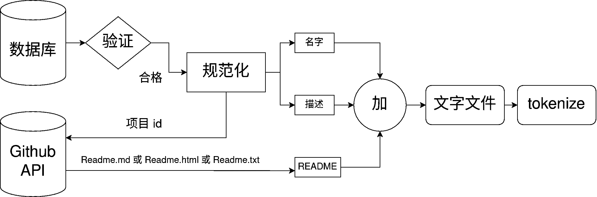
本研究使用的第一个训练算法是“Doc2Vec”。它是一种简单而有效的算法，早在现代复杂的方法（例如 Transformer）出现之前，就已用于 NLP 向量创建任务。本研究采用该模型，是因为它逻辑清晰，易于理解和代码实现。
“Doc2Vec”算法建立在“Word2Vec”算法之上，后者用于计算单词的向量，该算法的主要训练任务是根据周围上下文中的其他标记来预测单词，或者更确切地说是标记。它的核心是一个两层神经网络，并在其顶层构建了 softmax 层进行预测。
“Doc2Vec”算法扩展了“Word2Vec”的概念，引入了“段落向量”。其核心是一个与词向量同维的特殊向量，用于在嵌入空间中表示文档（词的集合）。段落向量也用于预测下一个词，前提是给定从段落中采样的多个上下文。段落向量和词向量会被取平均值或连接起来，以预测上下文中的下一个词。
Doc2vec 算法分为两个阶段。第一阶段是训练。训练文档向量和词向量的方法有两种。第一种是：分布式记忆模型 (DM)。在这种方法中，文档嵌入向量充当额外的输入词，其向量与其余输入词的嵌入向量的平均值（或连接）用于预测输出词。文档的嵌入向量被视为文档内容的记忆。第二种方法是：分布式词袋 (DBOW)。在 DBOW 中，学习文档嵌入向量来预测输出中随机采样的词。
本文的目标是创建并训练“Doc2Vec”模型，以获得段落向量的最终状态，这些向量将作为数据集中项目的表征。该过程包括训练步骤和测试步骤。首先，本文在训练数据集上训练模型，并在测试集上进行评估，使用测试策略（详见3.1），并测量测试集中所有文档的平均f1分数。
为了找到能够获得最佳结果的训练参数，本文使用了自动微调技术章 2.5。
使用欧氏距离作为相似度度量，本研究能够找到的最佳参数如表 2.2 所示：
| 参数 | DM 模型参数值 | DBOW 模型参数值 |
|---|---|---|
| 向量大小 | 168 | 230 |
| 上下文窗口 | 7 | 21 |
| 最小词数 | 25 | 8 |
| 迭代次数 | 46 | 41 |
| 负样本数量 | 7 | 5 |
| 采样率 | 0.0004950299217782151 | 0.0001052897612816065 |
评估结果在章 3.2 中提供。
虽然“Doc2Vec”是用于创建文本数据嵌入的非常有效的标准算法，并且被认为是整个自然语言处理领域的永恒经典，但它确实存在一些主要流程，例如缺乏上下文理解和无法处理长程依赖关系，并且受上下文窗口限制。这就是为什么本文需要使用更强大的 NLP 工具，例如 Transformer。
Transformer 神经网络彻底改变了自然语言处理领域，并已成为现代人工智能的基石。与其前身循环神经网络 (RNN) 不同，后者是逐步处理序列数据，而 Transformer 利用一种称为“注意力”的机制来并行处理整个输入序列。这一根本区别使它们能够更有效地捕捉文本数据中的长程依赖关系。正如在研究 (Qi Liu，2020 年文章 ) 中提到的，BERT 等 Transformer 模型可以有效地用于创建上下文嵌入，事实上，它被认为是一种比 Word2Vec 等简单的工具更强大的方法。
本章深入探讨了本研究如何使用 Transformer 网络。
Transformer 模型架构(Richard E.Turner, 2024 )本身在整个 NLP 领域是一个相对较新的概念。如前所述，Transformer 继承自循环神经网络 (RNN)。
Transformer 是一种由多个块 (block) 组成的神经网络，每个块又包含两层：
注意力层。使用线性变换，使模型在处理输入序列中不同部分时能够权衡其重要性。
多层感知层。前馈神经网络。进一步处理来自注意力层的语境化信息，并引入更复杂的非线性变换。
注意力层是 Transformer 神经网络的核心机制（Ashish Vaswani， 2023 ）。模型通注意力层学习不同标记（单词）之间的关系。
然后，这些块被一个接一个地放置，形成一个网络链。因此，初始标记会经过多层注意力和感知层，从而使模型能够理解即使在输入序列中距离较远的标记之间的复杂关系（Doc2Vec 的主要流程之一）。
本研究使用预训练的开源 Transformer 模型。之所以选择它们，是因为这些模型已经基于大量数据进行训练，能够理解句子中许多单词的基本关系，并捕捉句子的整体含义。需要做的是根据特定数据集调整预训练模型，使其能够捕捉单词和文档的语义。这个过程被称为“微调”，它是一种在特定任务上调整模型的流行方法，本质上是对模型进行二次训练，略微调整参数。
最经典的预训练开源 Transformer 模型是“BERT”（Transformer 的双向编码器表示）在研究（Jacob Devlin，2019 ）和（Olga Kovaleva，2019 ）介绍的。该模型有多个变体，例如“RoBERTa”、“ALBERT”等。本部分将详细介绍经典的“BERT”模型及其应用场景。
“BERT”模型基于 BookCorpus（8 亿词）和英文维基百科（25 亿词）进行训练，使用掩码语言模型 (MLM) 和下一句预测 (NSP) 作为下游任务。它有两种规模：基础版和大型版。“BERT-base”有 12 层、12 个注意力头、1.1 亿个参数和 768 维隐藏层；而“BERT-large”有 24 层、16 个注意力头和 3.4 亿个参数。本研究专注于“BERT-base”模型，因为“BERT-large”模型的训练过程会带来巨大的计算挑战。
如前所述，“BERT”是一个预训练模型，这意味着它可以开箱即用地实现高性能，但本章的目标是进一步在训练数据上对其进行微调，使其能够更好地理解文档之间的关系。为此，本章使用了“暹罗”（“Siamese”）微调策略，这是一种训练 Transformer 模型来理解句子语义的方法，（Nils Reimers，2019 ）和 （Tianyu Gao，2022 ）对此进行了很好的描述。
传统的训练策略是将句子对直接输入“BERT”网络以获得单个输出，而“Siamese BERT”网络由两个相同的“BERT”编码器组成，它们分别处理句子对中的每个句子。这两个编码器共享相同的权重，确保两个句子都映射到相同的嵌入空间。将每个句子通过其各自的“BERT”编码器后，本章将池化操作应用于输出标记嵌入，以构建该句子的向量表示。本章的实现使用提取[CLS]标记作为池化策略，这通常被认为是捕捉整体句子含义的标准方法，但是也可以考虑其他池化策略，例如均值池化或最大池化。“Siamese” 网络在底层任务上进行训练，该任务用于计算每个周期的损失。本章的实现使用相关的句子分类任务，这类似于语义文本相似度（此类训练策略的标准底层任务），但是还有其他有效的任务可用，例如释义检测或自然语言推理。这任务被选取，因其与研究目标高度契合。在对来自编码器的嵌入向量进行池化之后，本章计算它们之间的余弦相似度得分，将该得分乘以权重并添加偏差（这两个参数也是可训练的），然后执行一个简单的线性变换。最终得到了一个logit，并将其视为性能得分。本章的网络使用双向交叉熵（公式 3-1）损失函数进行训练。模型获取计算出的性能logit并将其传递给sigmoid函数，然后在开始反向传播之前计算双向交叉熵值。此操作的目标是使相关句子对的嵌入在同一空间中彼此接近，同时使不相关句子对的嵌入进一步分离。“BERT”模型的预训练权重提供了坚实的语义知识基础。本文的训练策略会针对学习有效句子嵌入（分类目标）的目标任务对这些权重进行微调。这种迁移学习方法使“Siamese BERT”即使在相对较小的特定任务数据集上也能取得优异的性能。
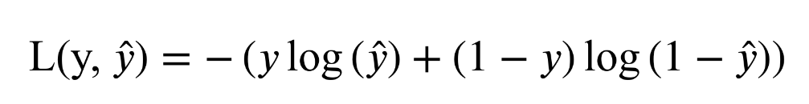
其中是实际标签（0 或 1）， 是预测概率（0 和 1 之间的值），由 sigmoid 函数返回。
为了构建带标签的文档对，本文使用以下策略：从训练文档数据集（410172 份文档）中，文档对通过随机抽样方式选择，如果该对中的文档至少共享 2 个共同标签，则将该对标记为 1（相关），否则将该对标记为 0（不相关）。文本总共收集了 1538100 对标记为 1 的文档对和 1538100 对标记为 0 的文档r，所有文档对都是唯一的，数据集总共包含 3076200 对文档对。然后，本章对该数据集进行混洗，并创建这些文档对的批次，因此每个批次包含大致相同数量的相关和不相关文档对。因此，这些批次是平衡的，这对模型训练至关重要，因为它确保模型能够真正从两个组相关和不相关）中学习，避免偏向多数组，并且能够很好地泛化到测试数据。然后，这些平衡的批次将被用于训练 “Siamese BERT” 模型。
对于本文的评估数据集，本研究采用相同的策略，从 72383 篇文档中构建了 271436 个相关对和 271436 个不相关对。
完整的训练流程如图 2.2 所示。
为了找到合适的参数来训练“Doc2Vec”模型，使其获得最佳性能，需要对模型进行微调。这意味着，本文必须用不同的参数反复运行本章的模型，检查性能得分，然后，参数被调整为可提升性能的配置，再次运行模型，如此反复。这不是最好的方法，因为开发者必须在完全茫然无措、毫无方向的情况下手动寻找合适的参数。当然，最终会注意到，增加某些参数通常会带来一些改进，但这些改进的模式通常非常不明确。因此，如果有一个自动算法，可以训练和测试模型，并以最高概率获得改进的方式调整参数，然后再进行训练，那就更好了。
为了解决这个问题，本研究使用一种基于“贝叶斯优化”（“Bayesian Optimization”）的算法。这个算法是在研究（Perry Groot，2010 ）和（J. Mockus，1975 年研究 ）介绍的。这是一种巧妙的优化方法，基于估计特定参数集的改进概率。该方法适用于评估过程耗时较长的函数，例如人工智能模型。它的核心是：在一次迭代中，它会构建一个先验（关于目标函数的假设），可以是初始参数，也可以是前一次迭代的观测值。然后，该方法使用标准（获取函数）来获得最大改进预期值（Perry Groot，2010 ）。本研究依赖于这个获取函数，称为“预期改进”。该函数采用当前的信念，并建议下一组需要评估的参数。它旨在平衡两个重要目标：
利用：选择当前模型预测会产生高价值的设置（充分利用已有知识）。
探索：在模型不确定的领域选择设置（尝试新事物以潜在地获得更良好的结果）。
然后，本研究采用“预期改进”(“Estimated improvement”)获取函数建议的参数，用这些参数训练模型，并使用章 3.1 中描述的策略对其进行评估，并测量性能。该过程重复多次迭代。
本章依赖于“scikit-optimize”库中该方法的实现。该实现使用非参数模型（该模型可以表示可能函数的分布，称为高斯过程，研究（Perry Groot，2010 ））来构建后验概率，即当前迭代的更新初始信念。
对于“Doc2Vec”模型，本章正在使用参数范围对模型进行大约 20-26 次迭代的调整如表 2.3 所示
| 中参数 | 范围 |
|---|---|
| 向量大小 | 从 150 到 240 |
| 上下文窗口大小 | 从 5 到 15 |
| 最小词数 | 从7 到 15 |
| 迭代次数 | 从35 到 55 |
| 负采样量 | 从5 到 20 |
| 样本值 | 从 1e-5 到 1e-3 |
“scikit-optimize” 库提供了“gp-minimize”方法，该方法利用高斯过程来最小化目标函数。此方法用于衡量模型的性能，它获取参数值，训练和测试模型，并返回负值（因为需要找到最小值）性能指标。
完整的微调流程如图 2.3 所示。

本节将深入探讨本研究领域内的聚类识别。聚类是在无监督机器学习中的一项基本技术，它允许基于内在相似性对数据点进行分组，从而揭示潜在的模式和结构。
在本研究中，聚类分析旨在评估和可视化高维嵌入空间中的项目和用户。本研究采用基于密度的层次化噪声应用空间聚类（“HDBSCAN”）（Kayumov Abduaziz，2024 ）作为主要聚类算法。这是一种基于密度的聚类算法，它扩展了“DBSCAN”算法，将其转换为层次化聚类算法，然后基于聚类稳定性提取出一个平坦的聚类。本研究采用它是因为它能够很好地处理不同的密度，不需要预先指定聚类数量，并且在实践中通常比更简单的算法表现更好。此外，本节还利用“K-means”算法实现了聚类。
另一个重要的细节是，该模型生成的嵌入向量是高维向量，无法直接显示，因此本节依赖于一种名为 t 分布随机邻域嵌入（“T-SNE”）的降维算法。这是一种强大的降维技术，主要用于在低维空间（二维或三维）中可视化高维数据集。它擅长保留数据的局部结构，这意味着在高维空间中彼此接近的数据点在低维嵌入中也可能彼此接近（Laurens van der Maaten，2008 ）。这一描述与可视化嵌入向量的目标非常吻合。
本节详述的方法和技术构成了本文对开源开发人员专业知识表征的研究基础。本节策略性地将先进的现代数据处理技术与强大的人工智能模型相结合，并建立并测试了一个强大的框架，用于提取、处理和合成开源存储库中的复杂文本数据。这个精心挑选的技术栈不仅仅是一个工具集合，而是一个紧密结合的系统，旨在应对非结构化数据的挑战，并深入了解开发人员的熟练程度。以下章节将演示如何应用此方法来评估和验证所提出的专业知识表征方案。
本节介绍本研究评估的结果。评估旨在评估本研究中所述模型的效率和性能。 结果经过整理，旨在对关键成果进行清晰、结构化的分析。本节将展示每个模型在主要评估任务上所达到的性能指标。 接下来将进行比较分析，重点介绍所提方法的优缺点。最后，本节讨论这些结果的含义，并考虑它们在“开发人员专业知识”问题背景下的意义以及未来应用的潜力。
人工智能模型的评估是开发过程中的关键步骤，旨在确保模型在未知数据上也能有效可靠地运行。此评估过程中的一项基本技术是使用训练数据集和测试数据集。本节概述了此评估方法，并阐述了其在评估人工智能模型泛化能力方面的重要性。
这种数据划分是人工智能模型训练中的标准做法，其重要性体现在以下几个方面。首先，它能够对模型的泛化性能进行无偏估计。通过在未经训练的数据上评估模型，可以评估其将所学知识应用于新的现实场景的能力。其次，它有助于检测人工智能模型开发中一个常见的问题——过拟合。过拟合是指模型对训练数据的学习过于深入，捕捉到了一些无法泛化到新数据的噪声和特定细节。在单独的测试集上评估模型可以揭示这个问题，因为过拟合的模型通常在训练集上表现良好，但在测试集上表现不佳。
本节描述如何使用章 2.2 中讨论的预处理数据创建的测试数据集。然后，本章将解释用于评估 AI 模型性能的具体评估技术，以评估开发者专业知识目标。
在进一步讨论之前，有必要先明确相关项目和不相关项目的概念。如果两个标准化项目至少共享 2 个共同标签，则它们被认为是相关的，否则它们就是不相关的（每个项目最多有 6 个标签）。
本方法基于从测试数据集中估计相关和不相关项目对的语义文本相似度，如研究（Jey Han Lau，2016 ）所述。针对该评估策略，零假设如下：
H.0：“存在相关性的项目之间的向量距离和不存在相关性的项目之间的向量距离没有显著区别”
备择假设如下：
H.1：“存在相关性的项目之间的向量距离显著低于不存在相关性的项目之间的向量距离。”
此方法涉及在测试数据集中创建两组项目对，第一组包含共享相同标签（相关）的项目对，第二组包含不相关的项目对，如果项目相关，则每对标记为1，否则标记为0。两组中的项目对数量相同，因此生成的数据集是平衡的。在评估步骤中，每对项目都通过具有固定权重的训练模型，以获得这些项目的向量表示（嵌入），然后计算它们的相似度得分，得到两组：第一组包含相关对的相似度得分，第二组包含不相关对的相似度得分，然后使用 Mann-Whitney U 统计检验 (Paul-Christian Bürkner，2022 )来确定两组中这些相似度得分分布之间的差异。基本思想是，训练有素的模型将为相关文档生成具有高相似度得分的向量，为组 1 中的不相关对创建高值分布，然而，模型将生成具有低相似度得分的向量，因此为组 2 创建低值分布。如果 Mann-Whitney U 检验显示高值分布明显大于低值分布，则意味着该模型通常可以判断两个项目是否相关，该结果表明该模型训练过程已达到预期目标。
值得注意的是，Mann-Whitney U 检验的标准操作是将其结果（介于 0 和 1 之间的单个浮点值）与某个预定义的 alpha 值（通常为 0.05 或 0.0001）进行比较，如果结果值小于 alpha，则认为差异显著。而本节中的实现则直接使用检验结果，而不将其与 alpha 值进行比较，这样做是为了能够比较不同模型或具有不同参数的模型的性能，并将该结果作为性能指标。因此，目标是训练模型，使其 Mann-Whitney 检验的结果尽可能小。如果检验的结果够小的话，这意味着接受零假设的概率很低而接受对反假设（备择假设）的概率很高，所以本研究中所介绍的方法支持备择假设。
上述技术可以捕捉项目之间的关系，这本身就是一种可靠的技术，可以保证模型能够根据文本内容理解相似和不相似项目的特征。然而，这仍然不是本研究的主要目标。由于主要目标是“开源开发者专业知识”，本研究必须进行另一项最终评估工作，旨在捕捉开发者与项目之间的关系，这实际上与本文的目标非常吻合。
针对该评估策略，零假设如下：
H.0：“项目与对该项目做过贡献的开发者之间的向量距离，以及项目与从未对该项目做过贡献的开发者之间的向量距离，没有显著差异”
备择假设如下：
H.1：“项目与对该项目做出贡献的开发人员之间的向量距离明显低于项目与从未对这些项目做出贡献的开发人员之间的向量距离”
这种方法也基于对，但与之前的方法不同，每对都包含一个开发者和一个项目。如果开发者对该项目做出了贡献，则本文将其标记为 1（相关），否则将其标记为 0（不相关）。因此，再次得到了一个组，其中包含标记为 1 的对和标记为 0 的组。为了构建这些对，本节使用了以下方法：对于数据集中的每个用户，本章检查该用户是否至少为 3 个包含高质量文本数据的项目做出了贡献，然后本章采用该开发者进行此评估任务。本研究总共收集了 2200 个这样的用户。
下一步是创建对本身，每对必须包含用户和项目，用户对项目做出或未做出贡献。首先，本章随机挑选每个用户并选择一个与该用户相关的项目，然后本章将该项目从用户的项目列表中删除，这样本章就能够创建 2200 对（每个用户一个项目），标记为 1（相关）。之后，本研究随机挑选项目并将每个项目与用户放在对中，确保该用户没有对该项目做出任何贡献，通过这种方式可创建一组标记为 0（不相关）的文档对。为了检查开发人员和项目之间的相似性，本文使用模型为一个用户创建每个项目的向量表示（嵌入），然后将这些向量的平均向量视为该开发人员的嵌入。接下来，本研究再次计算了开发者嵌入与项目嵌入之间的相似度得分，并将其与该用户配对。如果该配对标记为 1（相关），则将该相似度得分放入组 1；如果该配对标记为 0（不相关），则将该相似度得分放入组 0。最后，本研究再次计算 Mann-Whitney U 检验的值，以确定组 1 中的值分布是否显著大于组 0 中的值分布。如果是，则认为评估过程成功，模型训练良好。
这种方法与前面描述的相关项目评估技术非常相似，只是更适合与开发者合作，因此更符合本文的实际研究目标。
正如在章 3.1 中提到的，本文使用了两种主要的评估技术，这与本研究提升开发者专业知识的目标非常契合。第一个评估任务基于项目相似度评估，第二个评估任务基于用户-项目比对。
首先，本章展示每个模型的训练过程可视化。
对于 “Doc2Vec”，本文使用了章 2.5 中描述的自动调优技术，因此最好提供此调优过程的结果以及最佳模型学习率的递减情况。自动调优过程中评估函数值的递减情况如图 3.3 所示。
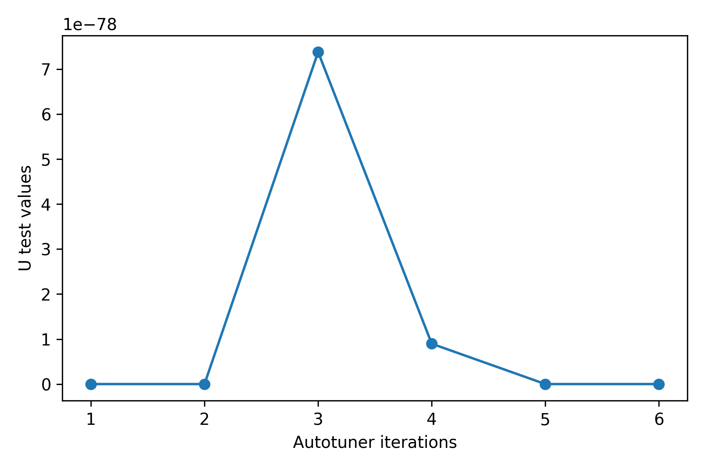
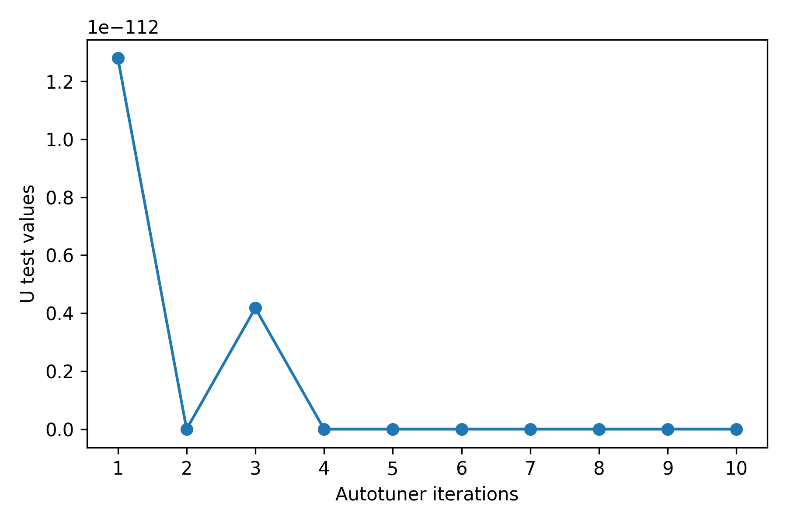
值得注意的是，虽然图上的 Mean-Whitney U 检验值看起来为 0，但实际上它是一个非常小的数，非常接近于 0，无法有效地绘制。
这些图揭示了以下模式：在评估任务中，以余弦相似度作为相似度度量的 DBOW 算法在第 4 次迭代后找到了一组非常稳定的模型参数，并且从那时起一直保持稳定；然而，DM 算法从相对可接受的值开始，之后性能下降（U 检验值较大），然后再次稳定下来。按照这么小检验值，接受零假设的概率很低，这意味着这两个模型在评估任务上都表现良好。
正如在章 3.1 中提到的，使用 Mean-Whitney 统计检验来确定相关文档对的相似度得分是否明显高于不相关文档对的相似度得分。
用户评估任务和项目评估任务的主要目标是衡量相关项目和不相关项目分布之间的差异。图 3.6 展示了这两个 Doc2Vec 模型为项目和用户创建的分布。
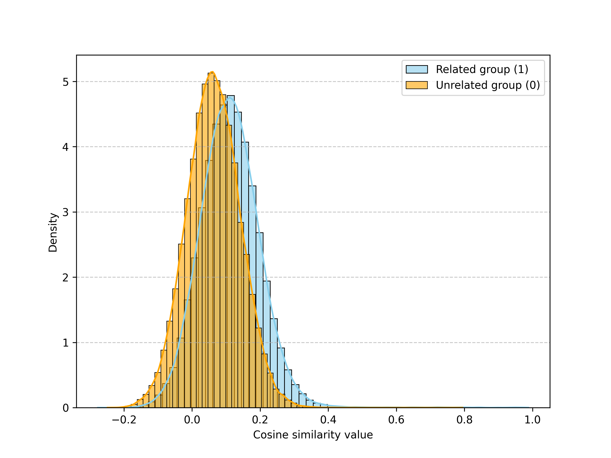
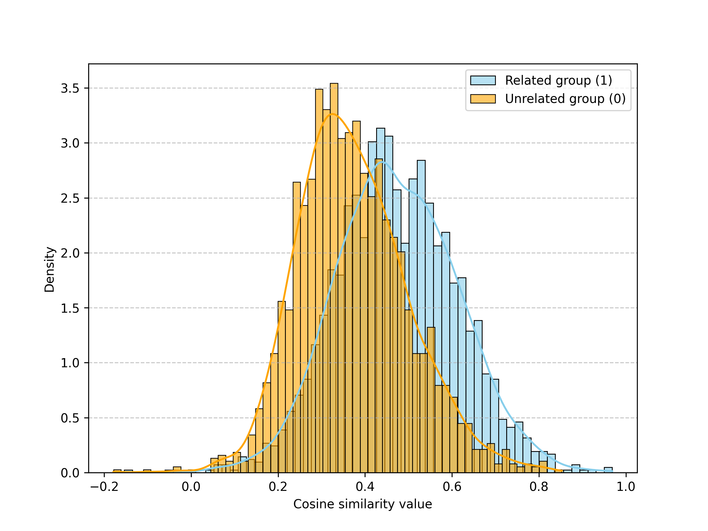
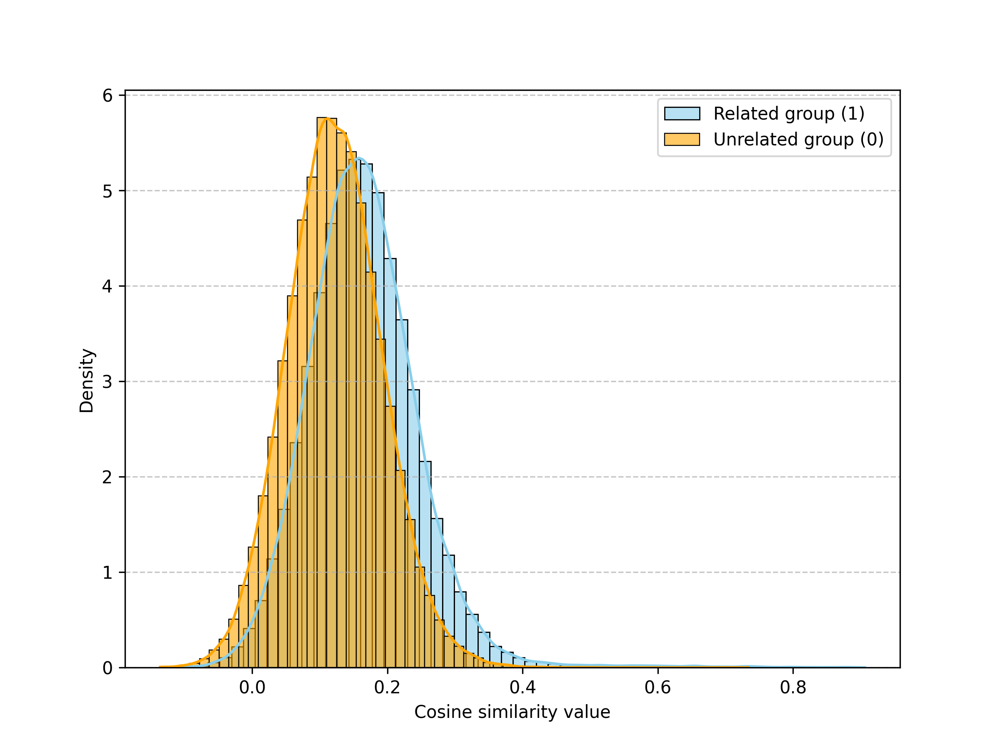
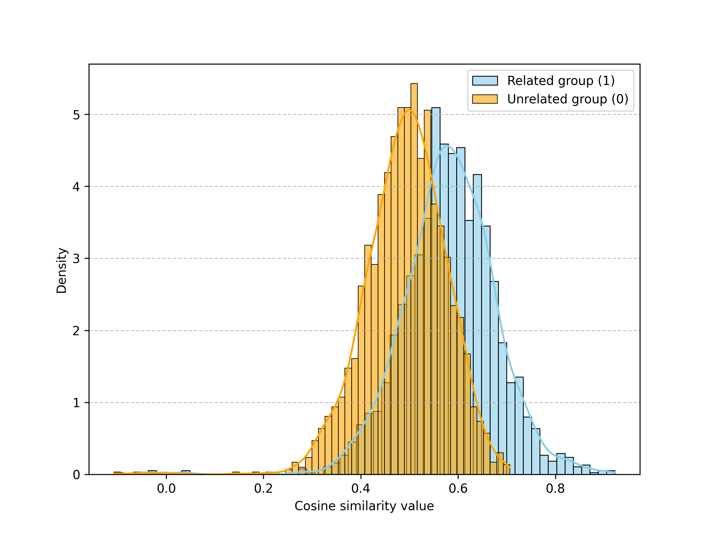
从图中可以清楚地看到，这两个模型都能为项目和用户返回非常清晰可靠的分布。然而，同样明显，这两个模型在区分相关和不相关的仓库方面并不出色，两组的分布似乎非常相似，尽管相关项目相似度得分的分布明显不同，且大于不相关项目相似度得分的分布，这是一个积极的影响，表明这两个模型实际上都学习到了一些模式，有时能够理解项目之间的关系。
对于用户，也可以看到类似的模式。然而，这两个分布的区分更加清晰，尽管由于数据量（只有 2200 个用户）的原因，分布本身并不是特别好，到处都可以看到波动和下降。但同样，这种清晰的区分也表明了积极的效果，表明这两个模型有时能够根据仓库创建开发人员的正确表示，表明他（她）做出了贡献，并理解了它们之间的关系。
为了观察BERT模型的训练过程，本章提供了其在每个周期的训练和评估过程中的损失函数值以及准确率指标。准确率指标被认为是评估神经网络模型性能的标准指标。结果如图 3.7 所示。
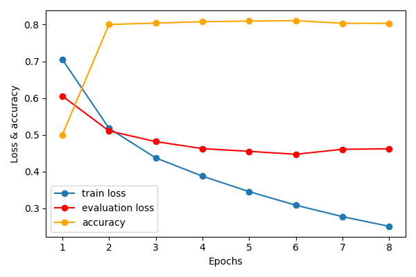
从该图中可以看出，BERT 模型训练相当稳定，在训练过程中表现出很高的准确率值。图 3.8 提供了 BERT 模型的分布可视化。
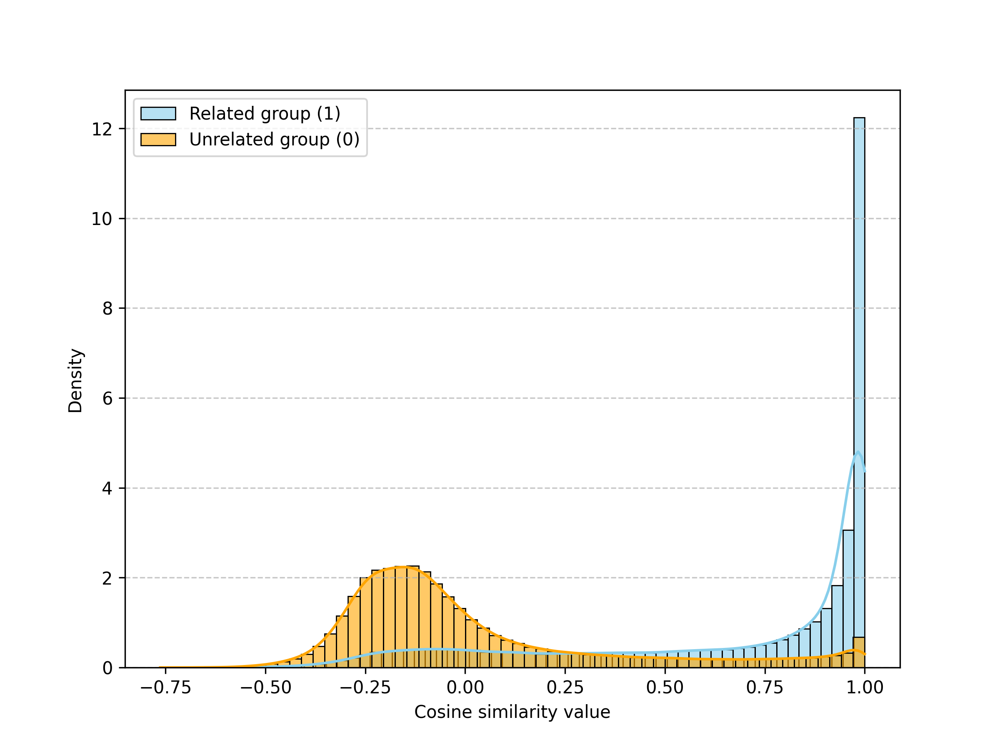
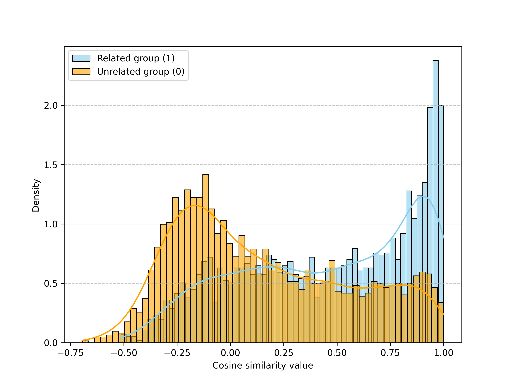
这些分布表明，与两个 Doc2Vec 模型相比，BERT 实际上试图为相关项目赋予更高的相似度值，因为这些项目的相似度得分分布趋向于 1。相比之下，不相关项目的分布表现出较低的方差，并且沿着所有可能值分散，聚集在相当低的值 -0.2 附近。这种行为可能表明某些项目 “混淆” 了模型，这很容易理解，因为数据集本身并不完美，而且相似的存储库通常包含完全不同的文本内容。对于第二个任务，可以看到类似的模式，模型可以有效地确定用户何时与其自己的存储库很好地对齐，并为此类对赋予较高的相似度值。但是，同样，还是会发生某种 “混淆” ，这可能也是由于数据集本身的原因，尽管 BERT 仍然能够为标记为 “不相关” 的对赋予较低的相似度得分（约 -0.2）。
表 3.1 提供了针对两个评估任务的每个模型的评估结果以及由此产生的 Mann-Whitney 检验 p 值。
| 模型 | 项目相似性 | 用户-项目相似性 |
|---|---|---|
| Random | 0.8288732073945853 | 1.978836536380615e-07 |
| Doc2Vec DM | 0 | 2.923874919642107e-131 |
| Doc2Vec DBOW | 0 | 1.337529218757519e-217 |
| BERT | 0 | 1.738428140292526e-124 |
再次强调，结果 0 并不意味着性能完美，这意味着值非常小，无法有效绘制（如前所述）。
随机模型是一个具有随机初始化向量的 Doc2Vec 模型，它没有接收数据，也未经训练，而是作为基准分数提供，以证明经过实际训练的模型的有效性。
该结果以及之前对组分布的观察清楚地表明，DBOW 模型的表现优于 DM 模型。
这些结果产生非常小的 p 值。对两个评估策略来说，这意味着接受零假设的概率很低而接受对反假设（备择假设）的概率很高。因此实际上本研究中的模型利用当前数据集的训练结果支持备择假设。
值得注意的是，尽管 BERT 模型的结果看似不如 Doc2Vec（如前文所示），但它实际上会尝试对相关项目给出高相似度分数，而对不相关项目给出低相似度分数，这与 Doc2Vec 几乎总是给出相当低的分数形成了鲜明对比。因此，仅凭这些统计测试分数显然不足以对模型进行公正的判断，结果的可视化尤为重要。
如在章 2.6 中所述，目标之一是创建项目聚类，以可视化它们之间的比对关系。本章主要使用了 HDBSCAN 和 K-means 聚类算法，并结合了 t-SNE 降维技术，如在章 2.6 中所述。
需要注意的是，t-SNE 算法本身计算量较大，因此在本任务中，本研究仅采样了 1000 个项目进行可视化。当然，这不是完整的评估数据集，但它仍然可以提供一些见解。
第一个模型是Doc2Vec数据挖掘 (DM)，在评估步骤中，创建了存储库和用户的向量表示，然后直接使用这些向量创建聚类。图 3.9 展示了使用 Doc2Vec 数据挖掘 (DM) 模型计算的项目和用户嵌入向量的聚类结果。
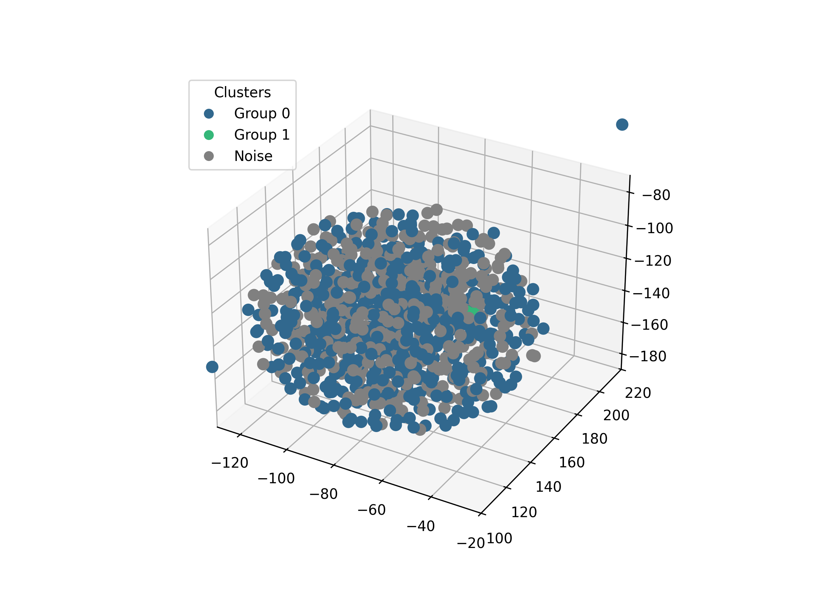
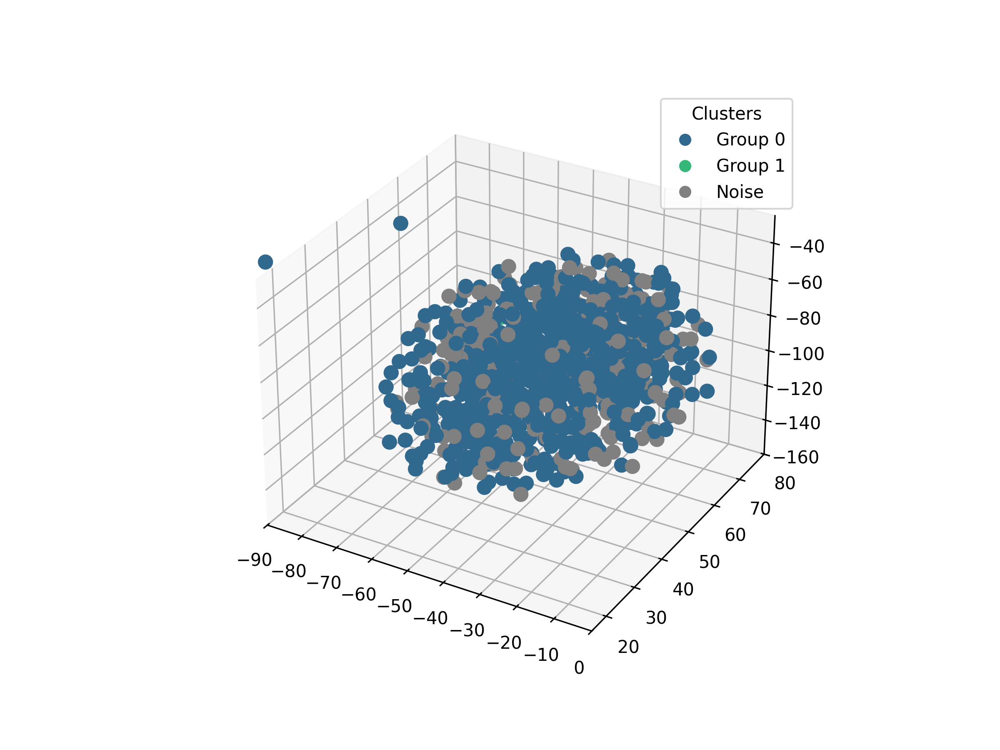
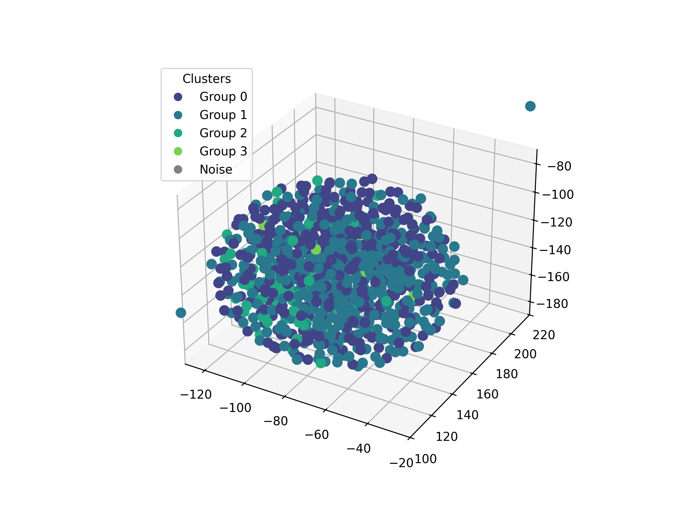
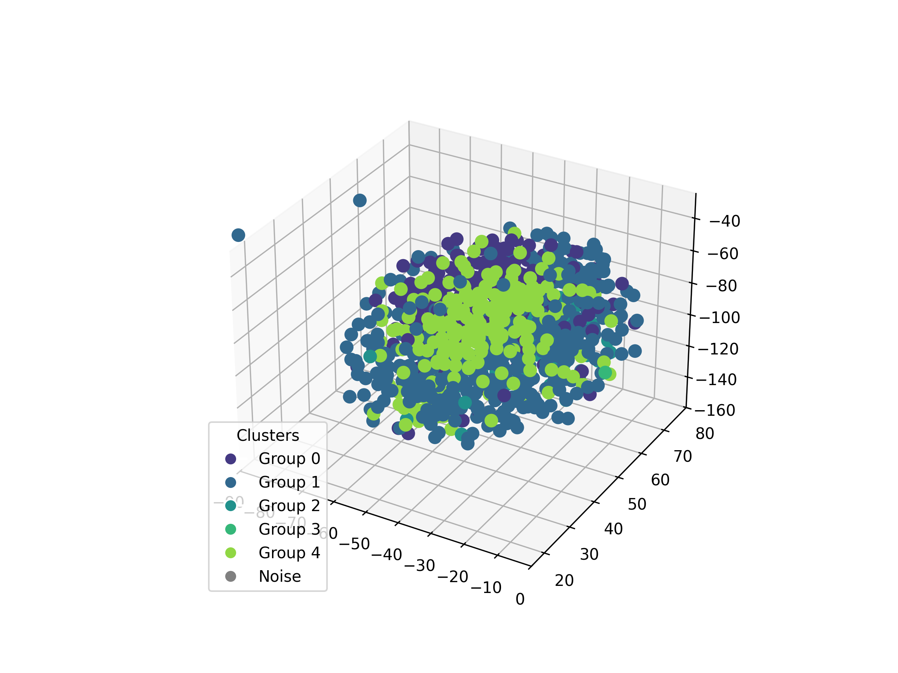
由此可见，HDBSCAN 算法在对开发者和项目进行分组时存在困难，将大多数点标记为“噪音”。而 K-means 算法则能够很好地对用户进行分组。K-means 算法显示了 5 个聚类，并且可以看到明显的分离。例如，很明显，第 4 组用户的向量倾向于聚集在一个较大的区域中，而第 0 组用户的向量则分布在靠近第 4 组用户的较小区域内。这清楚地表明了用户分组的一些模式。
其次，本研究使用 Doc2Vec DBOW 模型，采用相同的算法创建聚类。结果如图 3.10 所示。
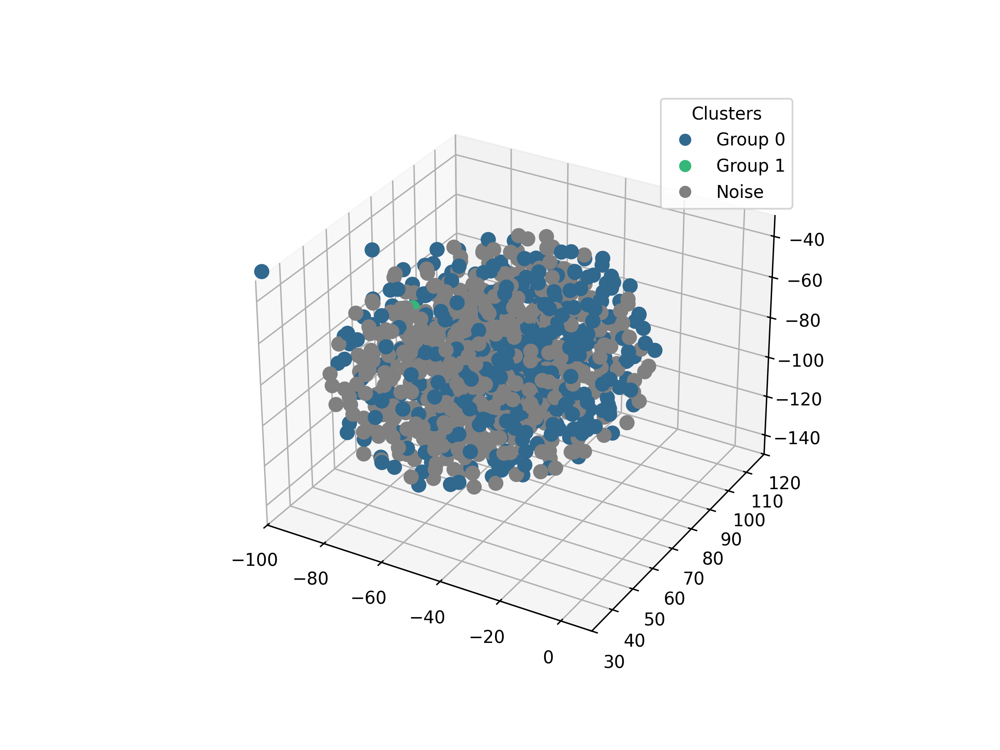
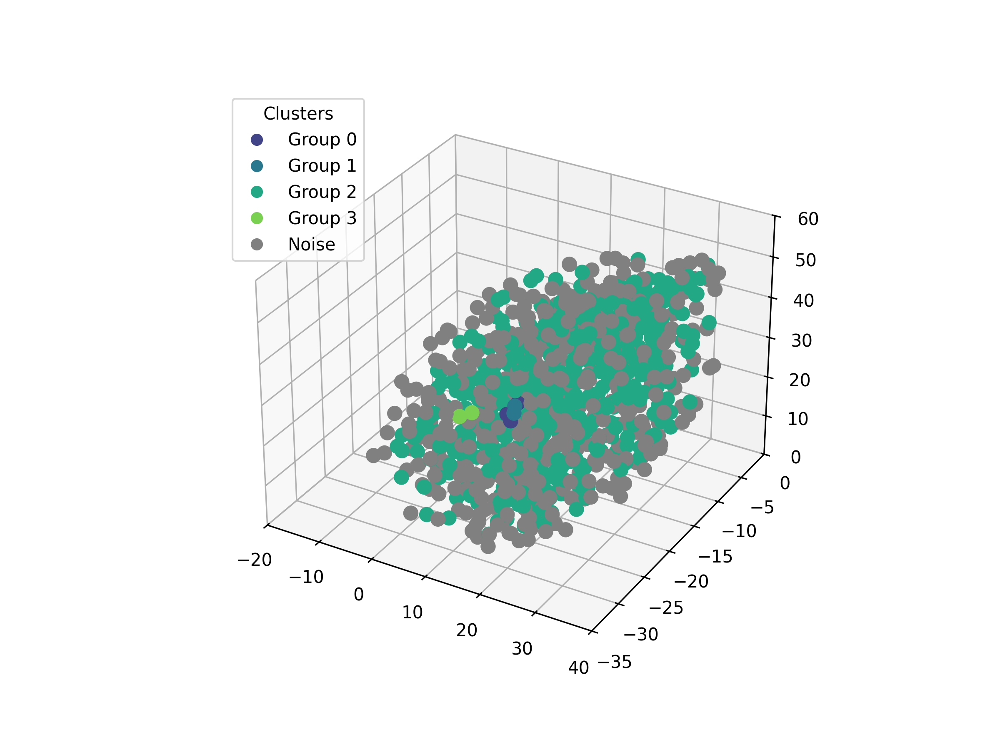
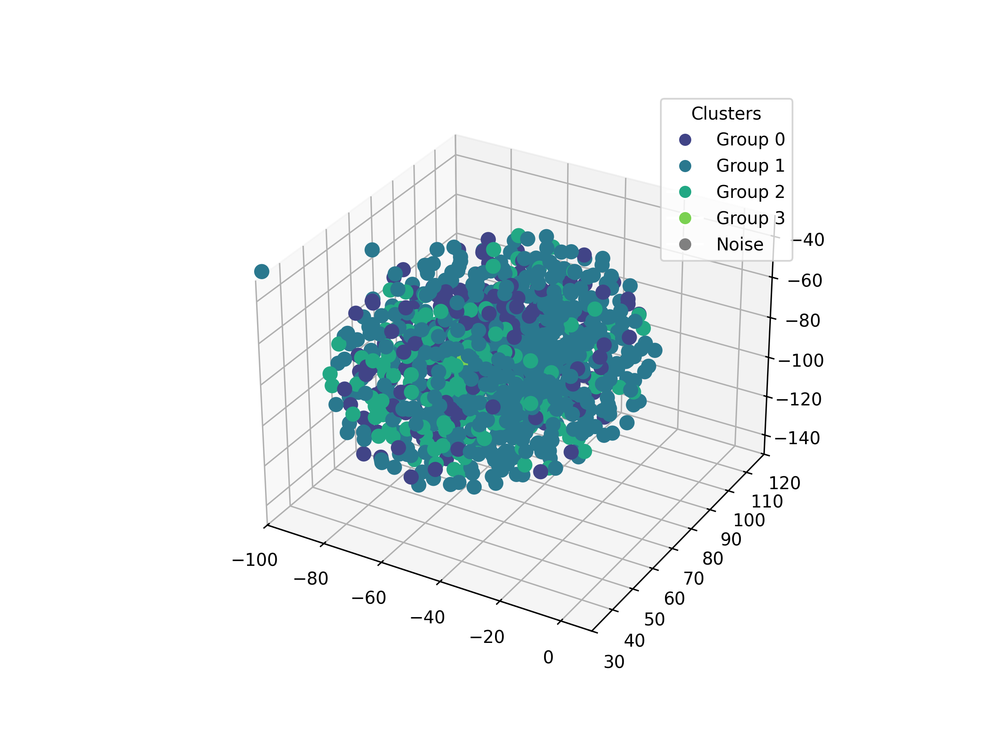
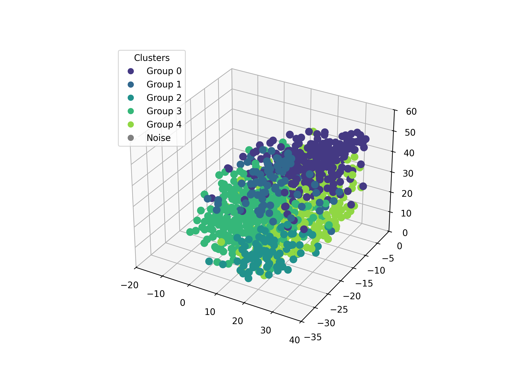
该模型提供了更清晰的聚类结果。尽管 HDBSCAN 再次未能提供清晰的分类，将大部分数据映射为 “噪声” ，但它能够捕捉到第 3 组和第 0 组中的一些特定用户。聚类结果显示，这些组中的用户在某种程度上是独一无二的，数量不多，而且彼此紧密相关。
K-means 算法显然在用户分组方面表现良好，在图上可以清晰地看到 5 组用户，每组都分布均匀，占据了各自的区域。显然，第 2 组中的用户与第 0 组和第 1 组中的用户相距甚远，但与第 3 组中的用户距离较近。该图可以根据用户所处理的存储库显示用户之间的紧密关系。
这意味着，该模型可以捕捉用户之间的某些关系，因此可以用于展现开发人员的专业知识。
最后，使用相同的聚类算法，由 BERT 模型创建的聚类如图 3.11 所示
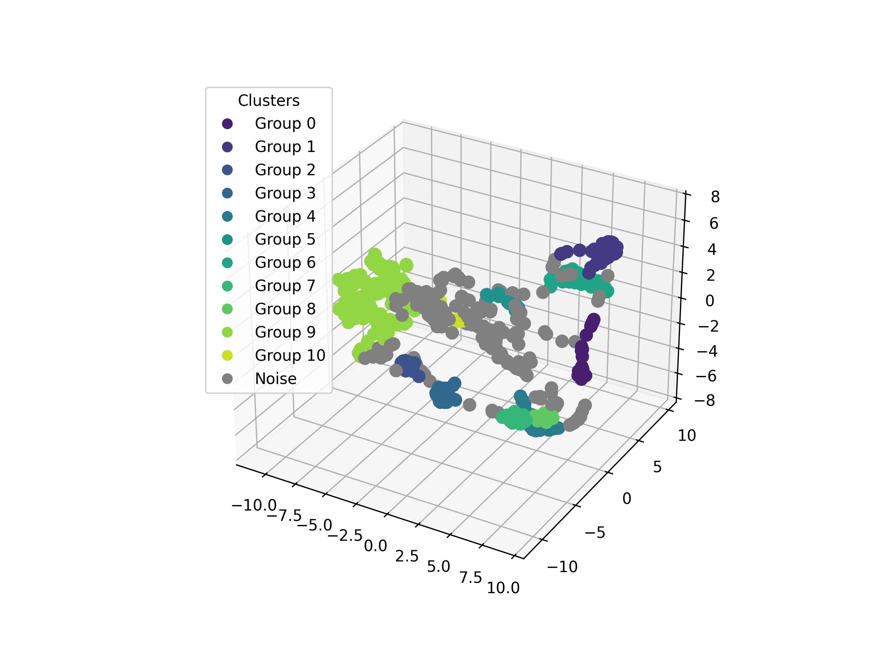
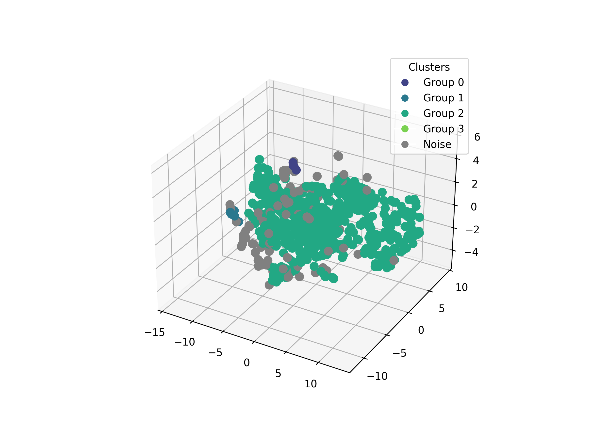
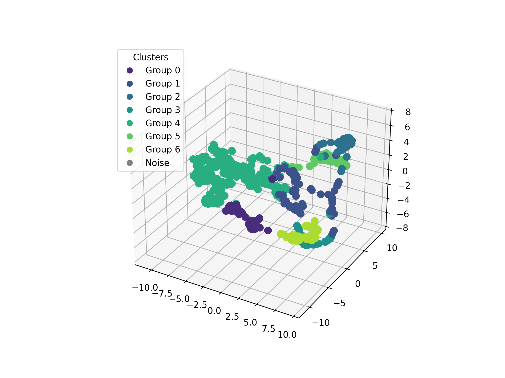
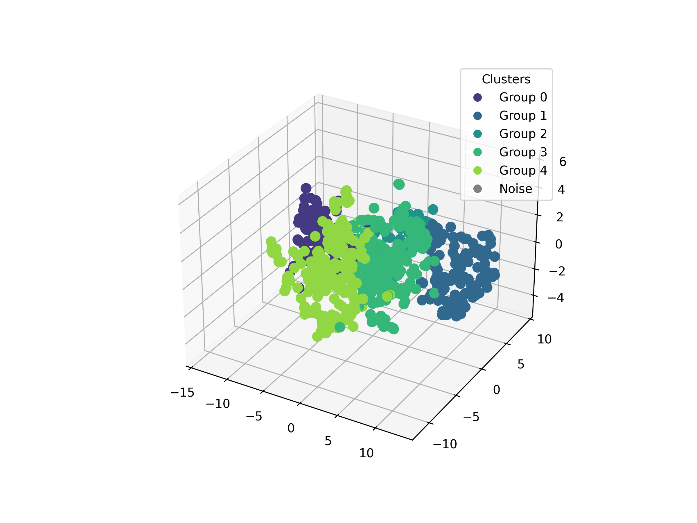
这些图表明，BERT 模型实际上可以很好地对代码库进行分组，聚类清晰且分离良好，聚集在特定的位置。即使是 HDBSCAN，也能显示出良好的聚类效果，噪声较少。例如，根据 K-means 算法，可以清楚地看到组 0 和组 2 中的代码库差异很大，而组 1 似乎介于两者之间。这可能表示某种强关系，例如前端组、后端组和 API 开发项目组，尽管实际上它可能更加抽象和模糊。至于用户，HDBSCAN 无法提供足够的结果，尽管可以清楚地看到一些用户在某种程度上是独一无二的，就像 Doc2Vec 的聚类结果所显示的那样。K-means 算法提供了定义清晰、分离度极高的聚类，正如图所见示，5 组用户被非常清晰地划分开来，这当然表明用户之间存在某种强关系，具体取决于他们所贡献的项目。事实上，该模型毫无疑问地产生了如此清晰的聚类，这表明它实际上可以理解这些抽象的关系和对齐，因此可以而且应该有效地用于诸如执行开发人员专业知识之类的问题。
正如本章所示，经过训练的模型能够捕捉存储库之间以及用户之间的关系，并对其进行分组，从而展现出显著的模式。K均值聚类表现出更高的有效性，能够突出显示对象组。然而，需要注意的是，每种方法的结果都远非理想状态。当然，这部分是由于这是高维向量的三维投影，无法反映实际情况，但它仍然表明，应该添加其他方法来补充研究，并实现更接近理想的状态。
本论文完成了一项关于开源开发者专业知识执行问题的调查。最初的目标是利用开源代码库的文本数据，所进行的研究涵盖数据预处理、模型开发和评估，为理解开发者专业知识执行问题所带来的挑战提供了宝贵的见解。
主要发现和观察总结：本研究的主要发现虽然尚未形成可靠的解决方案或可立即投入实际应用，但可以概括如下：
Doc2Vec 和 BERT 等 NLP 模型可能用于捕捉代码库之间以及开发者之间的某些关系和关联。
应谨慎使用此类模型和数据源。
这些发现表明，本研究中提出的方法可以捕捉项目之间和用户之间的某些关系，但它们应该与其他方法结合使用，并结合其他数据源使用。此外，更大量的文本数据（例如代码库提交消息和评论的文本内容以及 Github Issue 内容）实际上有助于进一步克服挑战并获得更好的结果。
研究意义 这项研究完成后将带来以下重要启示：
促进理解：使用强大的 NLP 方法（例如 Doc2Vec 和 BERT）可以捕捉开源项目与开发者之间的某些关系，并且来自不同来源的更多文本数据可以提供更好的结果，但这当然会耗费更多的时间和计算能力。
指导未来工作：通过识别局限性和挑战，本研究为未来研究提供了重要指导，建议利用其他更可靠的数据源，例如源代码、用户整体行为、好友列表等。
研究的局限性和经验教训 本研究面临一些局限性，这些局限性导致了观察到的结果：
计算能力的限制。即使处理 200 万对相关和不相关的开源项目，也会对硬件构成巨大挑战，需要大量时间才能完成。更多数据将带来更大的挑战。
所选的 Doc2Vec 算法对其参数较为敏感，但仍然能够稳定地进行训练并产生可观的成果。
时间限制阻碍了对超参数调优和替代模型开发的更深入探索。
从这些挑战中，可以汲取一些经验教训，包括数据质量、数量、不同的数据源以及稳健的评估指标的重要性。这些经验加深了对开发人员专业知识问题以及该领域应用研究挑战的理解。
根据本研究的结果，未来研究的几个关键方向出现了:
使用其他数据源（例如源代码）非常重要，它有助于提高专业知识的效率。
大量文本数据有可能带来一些改进，并有助于提高专业知识的效率，但这当然会加上挑战。
需要进一步研究如何利用其他基于 Transformer 的模型、池化策略以及新的数据收集和处理技术，以便更好地捕捉存储库文本数据中的底层模式。
总而言之，本论文通过探索自然语言处理技术的使用，并明确指出未来工作中必须应对的重要挑战，对理解开发人员专业知识问题做出了重大贡献。从本次调查中获得的见解，为指导未来针对开发人员专业知识这一复杂问题的研究工作奠定了基础。
本论文的完成离不开许多人的支持与帮助，在此谨致以诚挚的感谢。
首先，衷心感谢我的导师汪亮副教授，感谢您在研究选题、方法设计以及论文写作过程中的悉心指导。您严谨的学术态度和深刻的见解让我受益匪浅。
感谢我的家人和朋友们，感谢郑凯琳同学，是你们的鼓励与包容让我能够全心投入研究工作。
最后，向参与论文评审和答辩的各位专家致以谢意，感谢您们提出的意见。